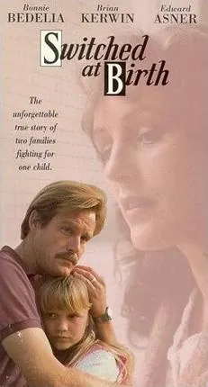

The genetics
The genetics is parentage testing. In the real case, Arlena's blood group B could not come from two group-O parents, and immunogenetic tests at Johns Hopkins confirmed that she was not the Twiggs' child; later tests on Kimberly, which Bob Mays first refused, showed that she was. These tests are the plot's turning points, but the drama is about what they cannot settle: whether a child belongs to the parents who share her genes or to the father who raised her. The miniseries gives real weight to both claims. It aired before the case was resolved: in 1993 a Florida court allowed the real Kimberly to cut off contact with her biological family and recognised Bob Mays as her psychological father, though she later moved in with the Twiggs for a time. Blood typing can exclude parentage, as here, but only DNA testing can confirm it with near certainty.
The story
This two-part television miniseries dramatises a real case from Florida. In late 1978 Regina and Ernest Twigg take home a baby girl, Arlena, who soon turns out to have a serious heart condition. Blood tests show that Arlena cannot be their biological daughter. After she dies at the age of nine, the Twiggs search for their own child and find her being raised as Kimberly Mays by Bob Mays, a man who believes he is her father: the two babies had been switched in the hospital where both were born. Mays at first lets the Twiggs visit Kimberly but later cuts off contact, and the story follows the bitter dispute between the girl's biological parents and the man who raised her. The miniseries was broadcast in 1991, while the real legal battle was still going on.